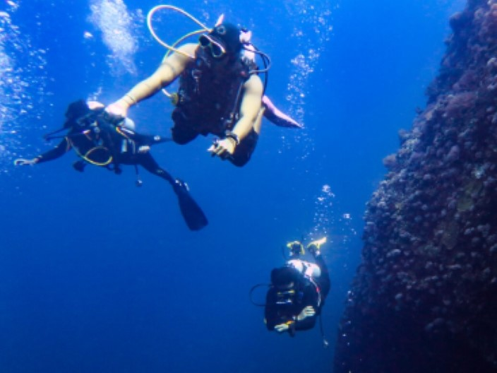
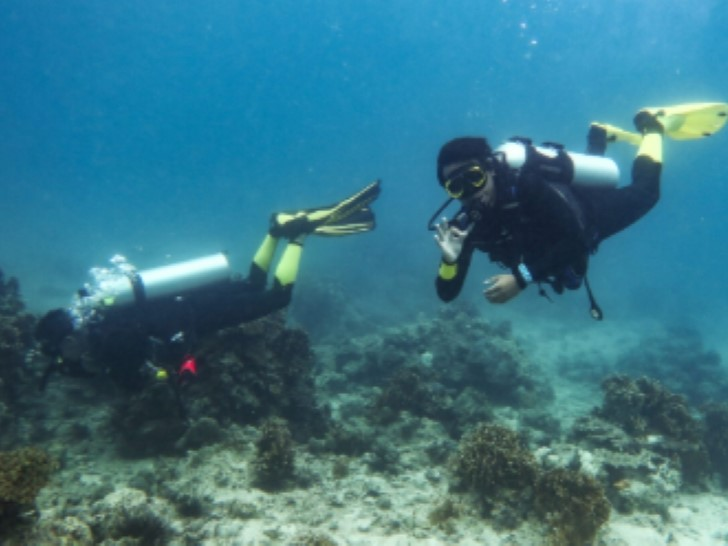
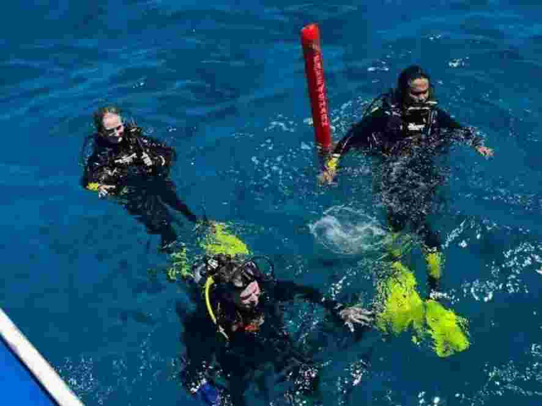
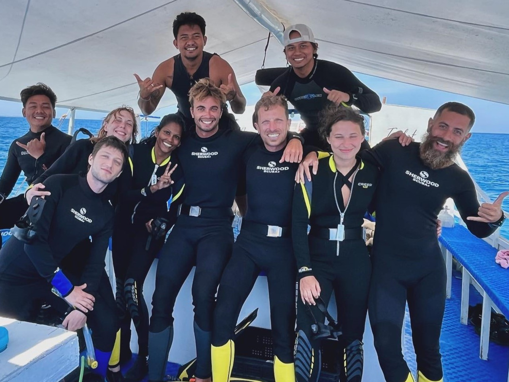
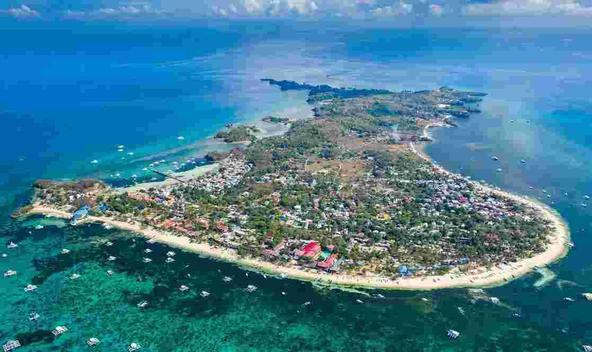

DISCOVER SCUBA DIVING
A fantastic way for beginners to experience scuba diving for the first time
SSI 4.9 Star Center
PHP 3,000
✔ Equipment Included
✔ Marine Fee Included
✔ Fuel Surcharge
SCUBA REFRESHER PROGRAM
Designed to help divers refresh their skills and regain confidence before diving again
SSI 4.9 Star Center
PHP 3,000
✔ Equipment Included
✔ Marine Fee Included
✔ Fuel Surcharge
DEEP DIVE
Designed to teach divers how to plan and execute deep dives safely, and it's a prerequisite for participating in shark dives in the area.
SSI 4.9 Star Center
PHP 3,000
✔ Equipment Included
✔ Marine Fee Included
✔ Fuel Surcharge
OPEN WATER COURSE
A globally recognized certification program designed to introduce beginners to the world of scuba diving
4.9 Star Center
PHP 16,999
PHP 18,999
✔ Equipment Included
✔ Marine Fee Included
✔ Fuel Surcharge
ADVANCE ADVENTURER
A fantastic way to explore various scuba diving specialties before committing to full certification programs
4.9 Star Center
PHP 14,999
PHP 16,999
✔ Equipment Included
✔ Marine Fee Included
✔ Fuel Surcharge

Malapascua Island
is renowned for its exceptional diving, especially for thresher shark encounters. It offers rich marine biodiversity, including vibrant coral reefs and diverse marine life. The island's dive sites cater to all levels of divers and feature opportunities for macro photography and wreck diving. With year-round diving conditions, Malapascua is a top destination for unforgettable underwater experiences.
One of the main attractions of Malapascua is the chance to dive with Thresher Sharks. These magnificent creatures, known for their long tails, can be seen year-round at Kimud Shoal, a popular cleaning station where divers have a high probability of encountering these elusive sharks. The experience of swimming alongside these gentle giants is truly unforgettable.
Malapascua is not just about Thresher Sharks. The island's stunning coral reefs are teeming with vibrant fish, sea turtles, eels, and more. For those who love finding tiny creatures, Malapascua offers excellent critter hunting opportunities. You can spot nudibranchs, pygmy seahorses, crabs, and shrimps as you explore the underwater world.
For those interested in wreck diving, the Dona Marilyn offers an exciting adventure. This shipwreck, which sank in 1988, is now home to a variety of marine life and provides a unique diving experience.
Just off the coast of Malapascua, Gato Island is a must-visit for divers. This island features underwater caverns and tunnels, as well as a wide array of marine species, including white-tip reef sharks, sea snakes, and cephalopods. The underwater landscape is both beautiful and mysterious, making it a favorite among divers.
The best time to dive in Malapascua is from January to May, when the conditions are ideal with good visibility and calm seas. April and May are particularly great for spotting shoals of hammerheads.
Malapascua is home to several reputable dive shops and liveaboards that cater to divers of all levels. These dive centers offer guided tours, equipment rentals, and expert advice to ensure a safe and enjoyable diving experience.
Malapascua Diving: A Premier Underwater Experience
When it comes to premier diving destinations, Malapascua Diving stands out as one of the top spots for divers around the world. Located in the Central Visayas region of the Philippines, Malapascua Island has gained international acclaim for its unique and vibrant underwater ecosystem. If you're planning a dive trip, Malapascua Diving should be at the top of your list.
Why Choose Malapascua Diving?
Malapascua Diving offers an unparalleled experience for both novice and experienced divers. Known primarily for its thresher sharks, Malapascua Diving allows you to witness these magnificent creatures in their natural habitat. Monad Shoal, the most famous dive site for thresher sharks, is a must-visit for anyone diving in Malapascua.
In addition to thresher sharks, Malapascua Diving provides opportunities to explore stunning coral reefs, diverse marine life, and incredible underwater formations. Dive sites such as Gato Island, Lighthouse Reef, and the Dona Marilyn Wreck each offer unique diving experiences, making Malapascua Diving a versatile destination for all kinds of divers.
Dive Sites of Malapascua Diving
Monad Shoal: The crown jewel of Malapascua Diving, Monad Shoal is the best place to see thresher sharks. The early morning dives at this site are a once-in-a-lifetime experience.
Gato Island: This site is a marine reserve and sanctuary for sea snakes. The underwater tunnels and vibrant marine life make it a highlight of Malapascua Diving.
Lighthouse Reef: Popular for night diving, Lighthouse Reef features mandarin fish and other nocturnal creatures. It's one of the unique experiences that Malapascua Diving offers.
Dona Marilyn Wreck: A thrilling wreck dive, this sunken ferry is now home to a plethora of marine life. Exploring this site is a testament to the diversity of Malapascua Diving.
The Diving Community in Malapascua
One of the best parts of Malapascua Diving is the strong sense of community among divers. Dive shops and schools on the island offer various courses and certifications, ensuring that everyone, from beginners to advanced divers, can enjoy Malapascua Diving. Experienced instructors are ready to guide you through the beautiful underwater world, making Malapascua Diving a safe and enjoyable adventure.
Beyond Malapascua Diving
While Malapascua Diving is the main attraction, the island also offers a relaxed atmosphere perfect for unwinding after a day of diving. You can enjoy fresh seafood at beachside restaurants, take a stroll along the pristine beaches, or simply soak in the natural beauty of the island. The friendly locals and vibrant community add to the charm of Malapascua Diving.
Conclusion
In summary, Malapascua Diving offers an extraordinary underwater experience that is hard to match. With its diverse marine life, beautiful dive sites, and welcoming community, it's no wonder that Malapascua Diving is a top choice for divers worldwide. Whether you're chasing thresher sharks or exploring vibrant coral reefs, Malapascua Diving promises an unforgettable adventure.
SSI vs PADI: Choosing the Right Diving Certification
When it comes to scuba diving certifications, two of the most recognized organizations are Scuba Schools International (SSI) and Professional Association of Diving Instructors (PADI). Both offer comprehensive training programs, but there are some key differences that might help you decide which one is right for you.
1. History and Recognition
SSI: Founded in 1970, SSI is known for creating a complete teaching course curriculum. It is recognized globally and offers a wide range of courses from beginner to professional levels.
PADI: Established in 1966, PADI is the largest and most popular diving organization in the world. It focuses primarily on recreational diving and is recognized worldwide.
2. Certification Levels
Both organizations offer similar certification levels, but there are some differences in their names and structure:
SSI Certification Levels: Open Water Diver, Advanced Adventurer, Stress and Rescue Diver, Master Scuba Diver, and more.
PADI Certification Levels: Open Water Diver, Advanced Open Water Diver, Rescue Diver, Master Scuba Diver, and more.
3. Training Approach
SSI: Emphasizes a flexible learning approach, allowing divers to progress at their own pace. SSI courses are known for their emphasis on safety and proper techniques.
PADI: Offers a more structured approach with a strong focus on recreational diving. PADI courses are widely available and often have a larger number of dive centers offering them.
4. E-Learning Options
Both SSI and PADI offer e-learning options, allowing divers to complete the theoretical portion of their courses online at their own pace. This is particularly useful for those with busy schedules.
5. Specialty Courses
SSI: Offers a variety of specialty courses, including underwater photography, wreck diving, and more.
PADI: Also offers a wide range of specialty courses, such as boat handling, search and recovery, night diving, and emergency oxygen provision.
6. Digital Certification Cards
SSI provides digital certification cards, making it easier to prove credentials when traveling. PADI also offers digital certification cards, but the process may vary slightly.
7. Instructor Training
Both organizations require their instructors to undergo rigorous training to ensure they are experienced and knowledgeable. This ensures that divers receive high-quality training from qualified professionals.
Switching Between SSI and PADI
If you're considering switching from one certification to the other, it's important to check if your current certification is recognized by the other organization. Generally, SSI and PADI certifications are recognized globally, but it's always a good idea to confirm with the dive center you plan to visit.
In conclusion, both SSI and PADI offer excellent training programs, but the choice ultimately depends on your personal preferences and diving goals. Whether you choose SSI or PADI, you'll be well-prepared to explore the underwater world safely and enjoyably.
Diving Malapascua: An Unforgettable Underwater Adventure
If you're looking for a diving destination that offers unparalleled underwater experiences, look no further than Diving Malapascua. Located in the Central Visayas region of the Philippines, Malapascua Island has become a hotspot for divers from around the globe. With its stunning marine life and diverse dive sites, Diving Malapascua is an adventure you won't want to miss.
The Allure of Diving Malapascua
Diving Malapascua is known for its incredible biodiversity and the unique opportunity to see thresher sharks up close. One of the most famous sites for Diving Malapascua is Monad Shoal, where divers can encounter these majestic sharks in their natural habitat. The thrill of seeing thresher sharks makes Diving Malapascua a must-do for any diving enthusiast.
But Diving Malapascua offers more than just thresher sharks. The island is home to vibrant coral reefs, diverse marine species, and fascinating underwater formations. Dive sites like Gato Island, Lighthouse Reef, and the Dona Marilyn Wreck provide a variety of experiences, making Diving Malapascua a versatile and exciting destination.
Top Dive Sites for Diving Malapascua
Monad Shoal: This dive site is the premier location for seeing thresher sharks. The early morning dives at Monad Shoal are a highlight of Diving Malapascua.
Gato Island: Known for its underwater tunnels and rich marine life, Gato Island is a favorite among those Diving Malapascua.
Lighthouse Reef: Popular for night dives, Lighthouse Reef offers the chance to see mandarin fish and other nocturnal marine creatures, making Diving Malapascua an intriguing experience.
Dona Marilyn Wreck: A wreck dive that adds an element of adventure to Diving Malapascua. This sunken ferry is now a haven for marine life.
The Diving Community on Malapascua Island
Diving Malapascua is not just about the underwater adventure; it's also about the community of divers who come together to explore the island's beauty. There are numerous dive shops and schools on the island, offering courses and certifications for divers of all levels. Whether you're a beginner or an advanced diver, the instructors here are experienced and ready to make your Diving Malapascua experience safe and enjoyable.
Beyond Diving Malapascua
While Diving Malapascua is undoubtedly the main attraction, the island also offers a relaxing atmosphere perfect for unwinding after a day of diving. Enjoy fresh seafood at beachside restaurants, take a leisurely stroll along the pristine beaches, or simply relax and enjoy the natural beauty of the island. The friendly locals and vibrant diving community add to the charm of Diving Malapascua.
Conclusion
In conclusion, Diving Malapascua offers an extraordinary underwater adventure that is hard to match. With its diverse marine life, beautiful dive sites, and welcoming community, it's no wonder that Diving Malapascua has become a top choice for divers worldwide. Whether you're eager to see thresher sharks or explore vibrant coral reefs, Diving Malapascua promises an unforgettable experience.